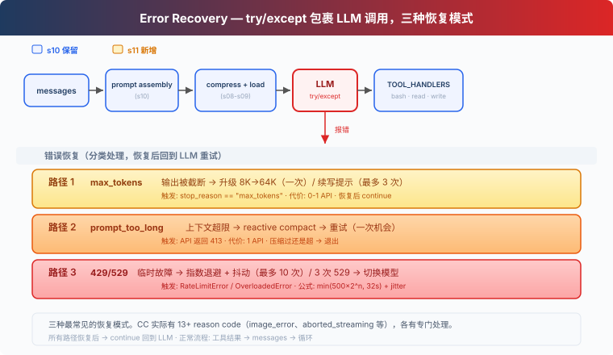

s11: Error Recovery — 错误不是结束，是重试的开始
"错误不是终点, 是重试的起点" — 升级 token、压缩上下文、切换模型。 Harness 层: 韧性 — 主循环遇到错误时分类并恢复。
On this page
s01 → ... → s09 → s10 → s11 → s12 → s13 → ... → s20
"错误不是终点, 是重试的起点" — 升级 token、压缩上下文、切换模型。
Harness 层: 韧性 — 主循环遇到错误时分类并恢复。
问题
Agent 跑着跑着报错了：
Error: 529 overloaded
Agent 崩溃了。它没有重试，没有换模型，没有减少上下文——直接崩溃。
生产环境中 API 错误是常态。三种最常见的故障模式：输出被截断（模型话说一半 token 用完了）、上下文超限（压缩后还是太长）、临时故障（429 限流 / 529 过载）。一个不处理错误的 Agent 就像一个一碰就熄火的车。
解决方案

s10 的循环、prompt 组装全部保留。唯一的变动：LLM 调用包裹在 try/except 里，根据错误类型走不同的恢复路径。恢复后 continue 回到循环开头重新调用 LLM。
三种最常见的恢复模式（教学版只处理 429/529；真实系统还覆盖连接错误、超时、云厂商认证缓存等。CC 实际有 13+ reason code，其余见 Deep dive）：
| 模式 | 触发 | 恢复动作 |
|---|---|---|
| 输出截断 | max_tokens |
升级 8K→64K / 续写提示 |
| 上下文超限 | prompt_too_long |
reactive compact → 重试 |
| 临时故障 | 429 / 529 | 指数退避 + 抖动，连续 529 可切换备用模型 |
工作原理
路径 1: 输出被截断
模型话说一半，max_tokens 用完了。默认 8000 token 不够它输出完整回答。
第一次发生时，直接把 max_tokens 从 8K 升级到 64K（8 倍空间），重试同一请求——此时不追加截断输出到 messages，保持原始请求不变。如果 64K 还是不够，才保存截断输出并注入续写提示让模型接着刚才的话继续说，最多 3 次：
if response.stop_reason == "max_tokens":
# First escalation: don't append truncated output, retry same request
if not state.has_escalated:
max_tokens = ESCALATED_MAX_TOKENS
state.has_escalated = True
continue # messages unchanged, same request with more tokens
# 64K still truncated: save output + continuation prompt
messages.append({"role": "assistant", "content": response.content})
if state.recovery_count < MAX_RECOVERY_RETRIES:
messages.append({"role": "user", "content":
"Output token limit hit. Resume directly — "
"no apology, no recap. Pick up mid-thought."})
state.recovery_count += 1
continue
return # still truncated after 3 continuations
# Normal: append after max_tokens check
messages.append({"role": "assistant", "content": response.content})
升级只有一次机会，续写最多 3 次。超过就退出——继续续写也不会有实质产出。
路径 2: 上下文超限
LLM 说"你的上下文太长了"（prompt_too_long）。s08 的四层压缩全跑过了，还是超。
触发 reactive compact——比 auto compact 更激进。教学版只保留最后 5 条消息模拟压缩效果；真实实现会调用 LLM 生成 compact 摘要再重试。压缩后重试。但如果压缩过一次还是超限，只能退出——再压缩也不会变小：
except PromptTooLongError:
if not state.has_attempted_reactive_compact:
messages[:] = reactive_compact(messages)
state.has_attempted_reactive_compact = True
continue
return # 压缩过了还是超限，只能退出
路径 3: 临时故障
网络抖动、429 限流、529 过载——这些不是 bug，是分布式系统的常态。
429 和 529 统一走指数退避 + 抖动：第一次等 0.5 秒，第二次等 1 秒，第三次等 2 秒，最多 10 次。加随机抖动让并发请求不在同一时刻重试。连续 3 次 529 过载 → 切换到备用模型（若配置了 FALLBACK_MODEL_ID 环境变量）：
def retry_delay(attempt, retry_after=None):
if retry_after:
return retry_after
base = min(500 * (2 ** attempt), 32000) / 1000
return base + random.uniform(0, base * 0.25)
def with_retry(fn, state, max_retries=10):
for attempt in range(max_retries):
try:
return fn()
except (RateLimitError, OverloadedError):
delay = retry_delay(attempt)
time.sleep(delay)
if is_overloaded:
state.consecutive_529 += 1
if state.consecutive_529 >= 3 and FALLBACK_MODEL:
state.current_model = FALLBACK_MODEL
raise MaxRetriesExceeded()
退避公式：min(500 × 2^attempt, 32000) + random(0~25%)。如果服务器返回 Retry-After header，优先用那个值。
合起来跑
def agent_loop(messages, context):
system = get_system_prompt(context)
state = RecoveryState()
max_tokens = 8000
while True:
try:
response = with_retry(
lambda: client.messages.create(
model=state.current_model, system=system,
messages=messages, tools=TOOLS,
max_tokens=max_tokens),
state)
except Exception as e:
if is_prompt_too_long_error(e):
if not state.has_attempted_reactive_compact:
messages[:] = reactive_compact(messages)
state.has_attempted_reactive_compact = True
continue
return
log_error(e)
return
# max_tokens check BEFORE appending to messages
if response.stop_reason == "max_tokens":
if not state.has_escalated:
max_tokens = 64000
state.has_escalated = True
continue # retry same request, messages unchanged
# save truncated output + continuation prompt
messages.append({"role": "assistant", "content": response.content})
messages.append({"role": "user", "content": CONTINUATION_PROMPT})
continue
# Normal completion
messages.append({"role": "assistant", "content": response.content})
if response.stop_reason != "tool_use":
return
# ... tool execution ...
外层 try/except 捕获 API 异常（prompt_too_long 等），with_retry 处理瞬态错误（429/529），stop_reason 检查处理截断。三种恢复机制各管各的错误类型。
相对 s10 的变更
| 组件 | 之前 (s10) | 之后 (s11) |
|---|---|---|
| 错误处理 | 无（一碰就崩溃） | 三种恢复模式 + 指数退避 |
| 新常量 | — | ESCALATED_MAX_TOKENS=64000, MAX_RETRIES=10, BASE_DELAY_MS=500, FALLBACK_MODEL |
| 新函数 | — | with_retry, retry_delay, reactive_compact, is_prompt_too_long_error, RecoveryState |
| 工具 | bash, read_file, write_file (3) | bash, read_file, write_file (3) — 不变 |
| 循环 | 裸调用 LLM | try/except 包裹 + continue 重试 |
试一下
cd learn-claude-code
python s11_error_recovery/code.py
试试这些 prompt：
- 让 Agent 生成一段很长的代码，观察截断后是否自动续写（看
[max_tokens] escalating日志） - 连续读取大量文件撑大上下文，观察 reactive compact
- 如果遇到 429/529，观察指数退避的日志输出
接下来
Agent 现在能在错误中自动恢复了。但它处理的任务仍然是"一次性"的——你给它一个任务，它做完，结束。
能不能让 Agent 管理一个任务列表——有依赖关系、持久化到磁盘、跨会话能恢复？TODO 列表不是任务系统。
s12 Task System → 任务是有依赖、有状态、持久化的图。这是多 Agent 协作的基础。
深入 CC 源码
> 以下基于 CC 源码 `query.ts`（1729 行）、`services/api/withRetry.ts`（822 行）、`query/tokenBudget.ts`（93 行）、`utils/tokenBudget.ts`（73 行）的分析。 ### 一、十几种 reason/transition（不只是 3 条） 教学版讲了 3 种最常见的恢复模式。CC 实际有十几种 reason/transition，每轮 LLM 调用后都会判断： | reason/transition | 教学版对应 | CC 行为 | |---|---|---| | `completed` | 正常完成 | 返回结果 | | `next_turn` | 正常工具调用 | 继续下一轮工具执行 | | `max_output_tokens_escalate` | 路径 1 | 8K→64K 升级 | | `max_output_tokens_recovery` | 路径 1 续写 | 续写提示（最多 3 次） | | `reactive_compact_retry` | 路径 2 | reactive compact → 重试 | | `prompt_too_long` | 路径 2 | 同上 | | `collapse_drain_retry` | 未展开 | context collapse 先提交暂存 | | `model_error` | 未展开 | 重试 | | `image_error` | 未展开 | `ImageSizeError` / `ImageResizeError` 专门处理 | | `aborted_streaming` | 未展开 | 流式中止恢复 | | `aborted_tools` | 未展开 | 工具中止 | | `stop_hook_blocking` | 未展开 | 注入 blocking error → 模型自纠 | | `stop_hook_prevented` | 未展开 | hooks 阻止 | | `hook_stopped` | 未展开 | hook 停止执行 | | `token_budget_continuation` | 未展开 | token 用量 < 90% 时继续 | | `blocking_limit` | 未展开 | 阻塞限制 | | `max_turns` | 未展开 | 达到最大轮次 | 教学版只展开了前 5 种（最常见的），其余各有专门处理逻辑。 ### 二、指数退避的精确公式 CC 的退避延迟（`withRetry.ts:530-548`）：delay = min(500 × 2^(attempt-1), 32000) + random(0~25%)
Output token limit hit. Resume directly — no apology, no recap of what
you were doing. Pick up mid-thought if that is where the cut happened.
Break remaining work into smaller pieces.
Stopped at {pct}% of token target. Keep working — do not summarize.